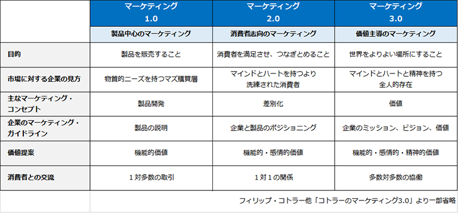
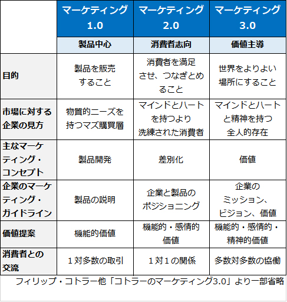

株式会社ココノッツ
株式会社ココノッツ


諸説がありますが、「広報」と「PR」という二つの用語の間に事実上違いはありません。それぞれ出自が異なるものの、いわゆるPublic Relations（PR）に対する日本語として「広報」が定着しています。ではPublic Relationsとは何か？ これもいろいろな定義が存在しますが、米国の広報研究者である
故S.M.カトリップ教授によれば、
パブリック・リレーションズとは、組織体とその存続を左右するパブリックとの間に、相互に利益をもたらす関係性を構築し、維持するマネジメント機能である。
S.M.カトリップ他著「体系パブリック・リレーションズ」日本語版監修：日本広報学会、ピアソン・エデュケーション刊 2008より
となります。ポイントは３つ。
1. 組織体とその存続を左右するパブリック
「企業とステークホルダー」は、「企業と社会」と読み替えてもよいでしょう。企業は社会というプラットホームの上で企業活動をしていることを
忘れてはならないということだと思います。
2. 相互に利益をもたらす関係性
自分だけが得をすればよいという自己中心的な考え方を排除するものです。
3. マネジメント機能
広報は企業経営と切り離せないものです。広報は広報セクションだけが行うものではありません。
この定義にはコミュニケーションという言葉がありません。広報活動って、Corporate Communicationsではないの？という疑問がわいてきます。ココノッツはこう考えます。“パブリックとの間に相互に利益をもたらす関係性を構築する”という目的を達成するために行う“あらゆる企業活動”がPublic Relationsであり、その最も基本的で有効な手段がコミュニケーションである、と。
改めて考えてみると、企業活動のほとんどはコミュニケーションで成り立っています。さらに、私たちの社会もコミュニケーションで成り立っています。広報活動の基本がコミュニケーションであることは自明のことなのかもしれません。
製薬企業や医療機器企業の広報活動はこれまで、B to B（Business to Business）広報と考えられてきました。医薬品や医療機器の顧客は医療機関であり、その購入権者は医師や薬剤師などの専門家であるからです。そのためか、一般社会へ向けての広報活動は不要であると考える人たちが少なくありません。現在もそのような経営方針をとっている企業が内資・外資を問わず存在しています。
しかし、現代の医療は患者中心です。自らの病気の治療に使われる医薬品や医療技術に無関心ではありません。どんな薬なのか、どんな医療機器で治療されるのか、もっと効果的な薬はないのか、もっと有効な治療法はないのか。世の中には医療情報があふれています。医療の消費者である患者さんは、その医薬品、その医療機器の有効性ばかりでなく、それが信頼にたる企業で開発、製造されているのかにまで関心を持つようになっています。
そのような現在、狭い医療界だけに目を向けているだけでは、企業の社会的責任を果たしたことにはなりません。ヘルスケア企業に広く社会に向けた広報活動が求められるのは、そのような理由によるものです。
ヘルスケア企業の製品やサービスを理解するには、医学や医療制度に関する知識が必要です。また医薬品や医療機器の広報活動には、法的規制や自主規範を理解し考慮する必要があります。
医学界には伝統的に築きあげられた特有の考え方や慣習が多く存在し、製薬企業や医療機器メーカーもまた、それらを共有しています。医師をはじめとする医療界の方々とコンタクトするにはこの「常識」を理解していることが大切です。
組織の中にあって、しばしば広報に対する他部門の理解不足、互いのコミュニケーション不足などの要因が重なり、広報施策の進捗が阻まれるケースがあります。 そのような社内事情への対処に、私たちのヘルスケア企業での広報実務経験が活きてきます。
時代、文化、技術などの移り変わりとともに人と人とのコミュニケーションもまた変化してきました。その中で人に何かを伝えようとするなら、丁寧なコンタクトや、イベント施策、話題提供の仕方、ストーリーの構築など、広報活動のノウハウが必要です。
医療、ヘルスケアを扱う媒体メディアは日々、変化と進歩をしており、その媒体特性に十分配慮したアプローチを行う必要があります。また医療を専門とするジャーナリストと日々接し、人間関係を作ることが、パブリシティだけでなく、情報収集の面でも大きな力となります。
ヘルスケアの分野では、“伝えたい情報を伝えたい人たちに届ける”ことが難しい時代になりました。
マーケティングの泰斗コトラー博士は、製品そのものを売り込むマーケティングを1.0、消費者志向の
マーケティングを2.0、消費者をマインドとハートと精神を持つ存在としてとらえマーケティングを3.0と、
それぞれ定義しました。さらにその発展形としてマーケティング4.0も提唱しています。


ヘルスケア分野の広報活動でも、患者さんたちが真に求めているもの*、それは「価値」と言い換えることができると思いますが、それらを理解し、共感し、それらに寄りそうコミュニケーションが求められています。そうでなければ、企業が“伝えたい医療情報”を広く社会に提供し、浸透させることはできません。
そのようなコミュニケーションは、医療の最前線で戦っておられる医療従事者のみなさまをサポートする広報活動にも成果をもたらします。
このような共感を追求する新しい広報活動を私たちは、コトラー博士に倣って「ヘルスケア広報3.0」と呼ぶことにしました。
＊患者さんたちがもとめているものとは、苦しみからの解放であったり、病気の寛解、
治癒、日常生活への復帰、生活の質の改善、人間としての尊厳の回復などなどであったりします。